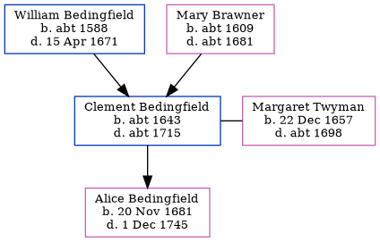

Clement Bedingfield c1643 - c1715
[ Home ] | [ Calendar ] | [ Surnames Index ] | [ Census Index ] | [ Family History ]The child of William Bedingfield and Mary Brawner, Clement Bedingfield, the 8 times great-grandfather of Nigel Horne, was born in Wootton, Kent, England c. 1643, was baptized there on Mar 24, 1643 and married Margaret Twyman (with whom he had 1 child, Alice) in Margate, Kent, England on Nov 2, 16763 (St. John's the Baptist).
He died c. 1715 in Margate1,2 and was buried there at St John the Baptist Church on Jan 6, 1716 (St. John's the Baptist)1,3.
Parents
- William was born c. 1588
- Mary was born c. 1609
Children
- Alice was born on Nov 20, 1681
Citations
- England, Select Deaths and Burials, 1538-1991 Ancestry.com Operations, Inc.
- Kent, England, Tyler Index to Parish Registers, 1538-1874 Online publication - Provo, UT, USA: Ancestry.com Operations, Inc., 2010. This collection was indexed by Ancestry World Archives Project contributors.Original data - Frank Watt Tyler. The Tyler Collection. Canterbury, Kent, England: The Institute of Herald
- Familysearch.org (www.familysearch.org)
Family Tree
Generated by ged2site. Last updated on Jun 11, 2024